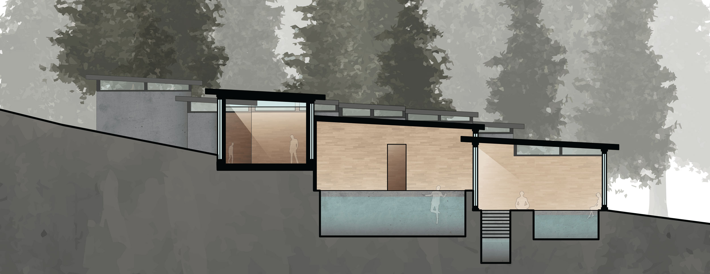
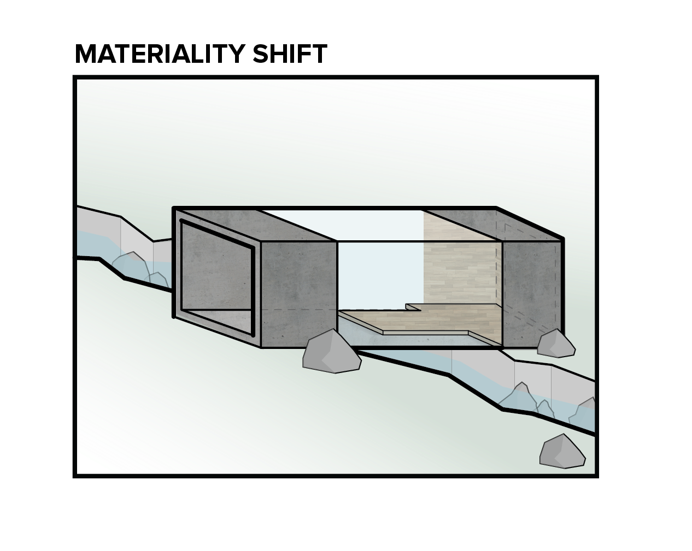
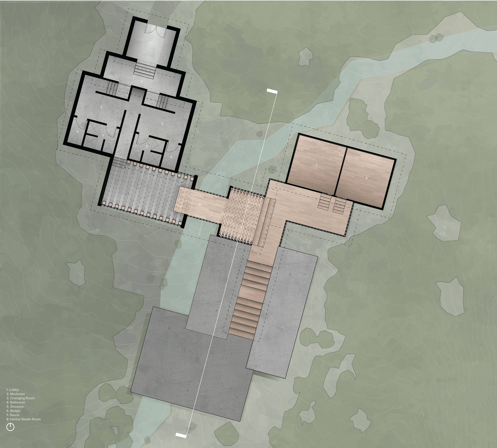
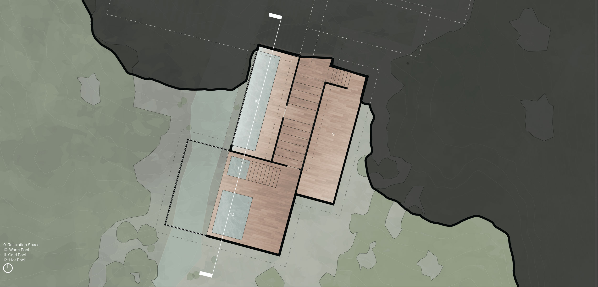
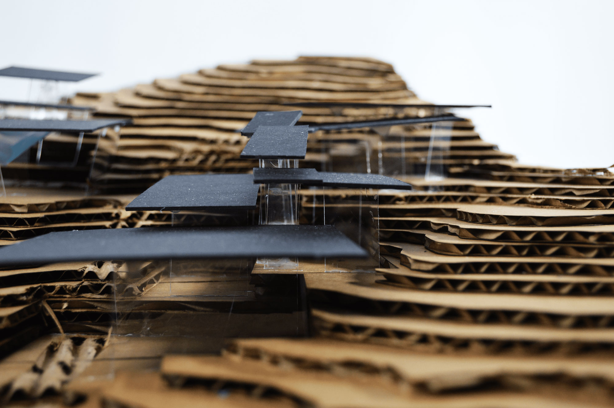
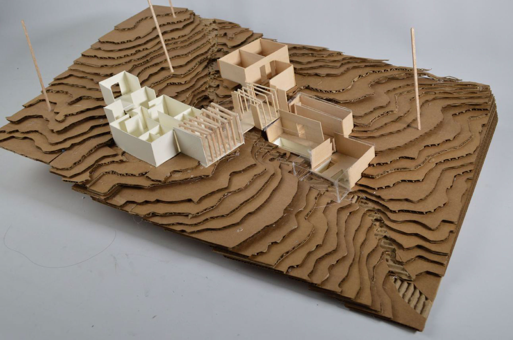
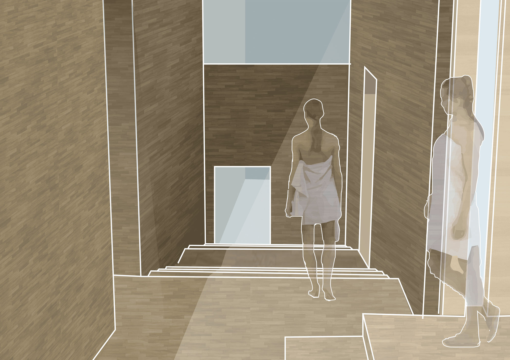
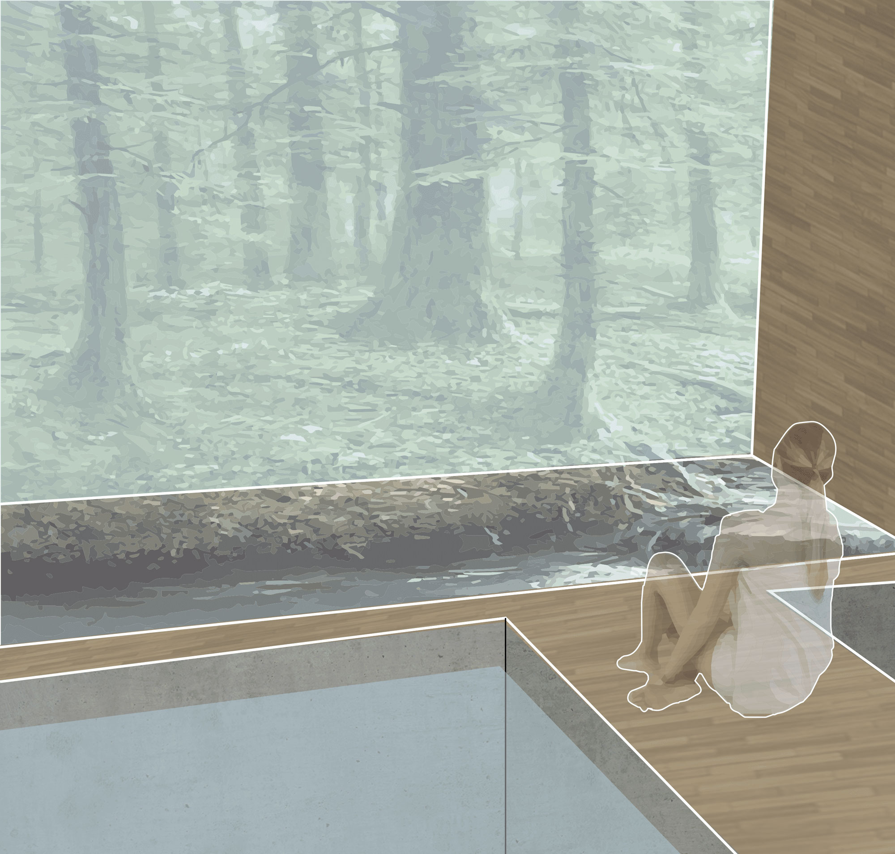
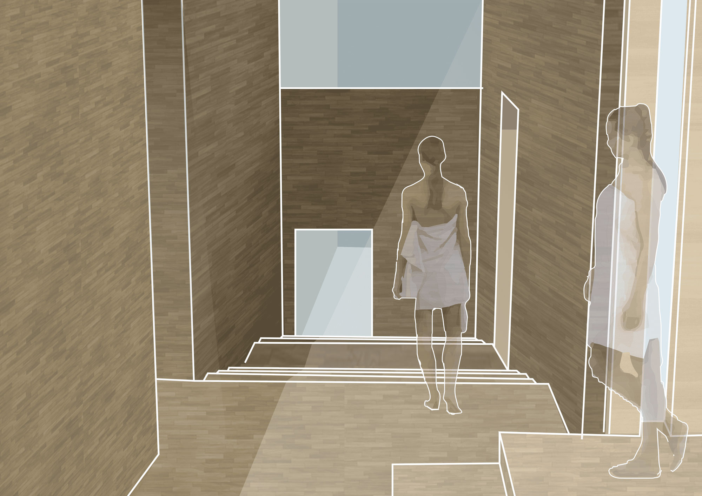
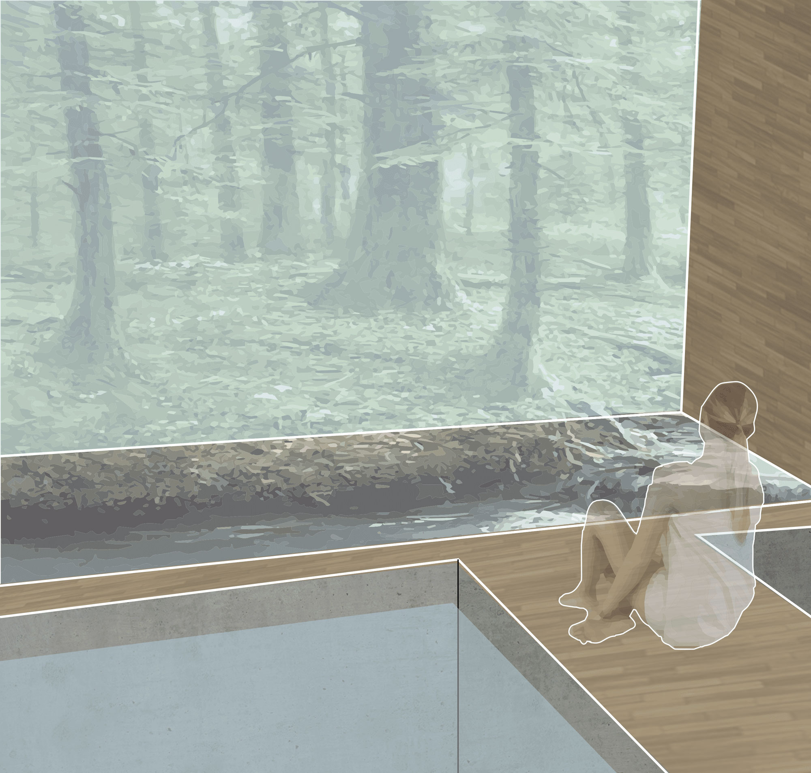

Spring 2018 | Elaboration II Studio | Saco Lake, NH | advised by Jeff King, Jeremy Ficca
The design for the bathhouse had to incorporate the ideas of “lightness” and “heaviness”, as well as incorporate the use of wood and concrete as a building material. The site was surrounded by four boundary conditions: the road (Crawford Notch Road), the hiking trail (Crawford Path), a stream, and Saco Lake. The elevation also drastically changes throughout the landscape from Saco River to Crawford Path.
Site Plan.

Section

Concept Diagrams
HEAVINESS & LIGHTNESS
The design’s main focus was to emphasize the idea of four different experiences after crossing the bridge to create multiple levels of involvement in relation to the stream for the visitors in a “stepping down” motion along the slope.
The first level, the bridge, allows for the visitors to see the stream to the right and left of them.
The second level, the warm bath, allows visitors to see the stream and feel as though they are in the stream by having only a glass wall separate them from the stream outside.
The third level, the cold bath, allows for rthe visitor to hear the stream.
The last level, the hot bath, allows for the visitor to hear the stream, see the stream, and feel as though they are in the stream.
The cold and hot baths are situated in a space that has the stream running through the room, allowing them to hear the stream water flowing down the site.

Plan.

Plan.
WOOD & CONCRETE
Located next to the stream, this design emphasizes the idea of bridging over
the stream to create an entirely new experience that differs from before the stream. The bath house, before the stream, is made entirely out of concrete in the interior and is symmetricla. The program consists of the lobby, mudroom, changing room, and showers/bathrooms. The material and symmetrical design creates a heavier feeling in comparison to the building after the stream. After the stream, the entire building’s interior becomes wood to create a lighter feeling, which is emphasized by the wooden bridge that literally sits on top of the concrete floor before the stream.


The bathhouse interacts with the site’s landscape by having differing parts of
the building sit at contrasting elevations. This creates a “stepping down” motion that is emphasized with the roofs. It also creates the image of boulder-like objects “falling down” the landscape from afar. This “stepping down” and “falling down” visual can be seen by the hiker when they are coming back down from the hiking trail. The entrance is also located in an area for the hiker to find more easily from their way back down the trail to encourage them to visit and relax after a long day of hiking.


 


